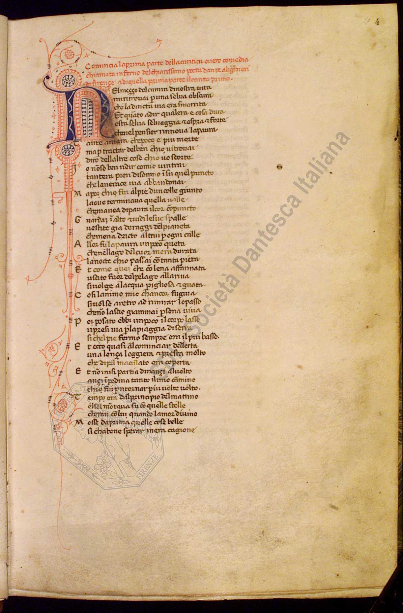
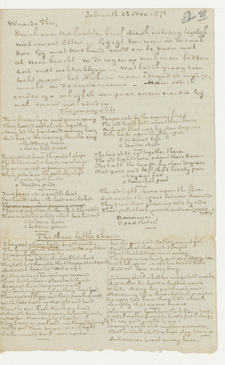
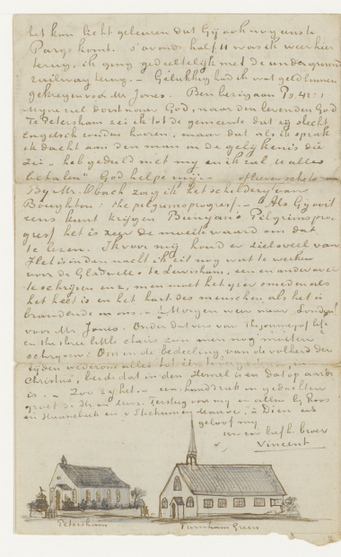

Introduction to
data modelling
in the Humanities
Information management
Information architecture
Information systems
Models
- A computational model is a representation of the object of study that is understandable by a computer.
- A data model, in particular, is a structured representation of the object of study that organise and describe the knowledge about that object.
- Statistical models, used in machine learning, learn from data and are not human-interpretable.
Primary sources in the humanities: manuscripts, diaries, letters, speeches, memoirs, historical documents, government records, works of art, music, films, photographs, architecture, performances, artifacts, objects, archival materials, newspaper articles, etc.
Riccardiano | Chigiano | Toledano

Brainstorming: how to describe them? Which of their characteristics, qualities, features, aspects, information are relevant for describing and representing them, for example in a db?
https://boccacciocommedia.it
By "modeling" I mean the heuristic process of
constructing and manipulating models, a "model" I take to be either a representation of
something for purposes of study, or a design for realizing something new.
[...] modeling has two phases: first, construction; second,
manipulation. Examples come readily to mind from ordinary technical practice, e.g., building
a relational database, then querying the data thus shaped to explore emergent patterns.
McCarty 2004
Analytical models, common in some scientific practices, necessary for computing -> computational models.
1
You are creating a database of artworks from a museum exhibition.
In groups, define at least 3 descriptors (characteristic, quality, feature, aspect, information...) to describe and represent each artwork (video sculptures) in the database.
Nam June Paik
- TV Buddha (1974)
- Family of Robot: Baby (1986)
- Internet Dream (1994)
2
You are creating a digital edition of Van Gogh's letters.
In groups, define at least 3 descriptors (characteristic, quality, feature, aspect, information...) to describe and represent each letter in the edition.


Il ruolo del modello nella scienza e nel sapere (Roma, 27-28 ottobre 1998), Sergio Carrà (ed.), Accademia nazionale dei Lincei, Roma 1999.
Models [...] represent constructs with a more limited meaning than laws and scientific theories and have an instrumental connotation. In other words, it is generally believed that the model does not have general applicability, but is limited to a specific context, and can be judged "good" when it proves useful for specific purposes (descriptive, explanatory, or predictive), not necessarily when it is considered "true."
Maria Carla Galavotti, “Leggi, modelli causali e manipolabilità”
The role of models in science is adequately explained by the analytical model. This is because formulating a model of certain phenomena is equivalent to formulating a hypothesis about those phenomena, and the formulation of the model is based on the same logical procedures, such as induction and analogy, that the analytical model uses as the basis for the formulation of hypotheses.
Carlo Cellucci, “I modelli, l'analogia e la metafora”
Selected bibliography
- Carrà, Sergio, ed. 1999. Il ruolo del modello nella scienza e nel sapere (Roma, 27-28 ottobre 1998). Roma: Accademia nazionale dei Lincei.
- Ciula, Arianna, and Øyvind Eide. 2017. ‘Modelling in Digital Humanities: Signs in Context’. Digital Scholarship in the Humanities 32 (suppl_1): i33–46.
- Eide, Øyvind. 2014. ‘Ontologies, Data Modeling, and TEI’. Journal of the Text Encoding Initiative, no. Issue 8 (December).
- Flanders, Julia, and Fotis Jannidis. 2015. ‘Knowledge Organization and Data Modeling in the Humanities’. In . http://www.wwp.northeastern.edu/outreach/conference/kodm2012/index.html.
- ———. 2016. ‘Data Modeling’. In A New Companion to Digital Humanities, edited by Susan Schreibman, Ray Siemens, and John Unsworth, 229–37. Wiley-Blackwell.
- McCarty, Willard. 2004. ‘Modeling: A Study in Words and Meanings’. In A Companion to Digital Humanities, edited by Susan Schreibman, Ray Siemens, and John Unsworth. Oxford: Blackwell.
- Pierazzo, Elena. 2015. Digital Scholarly Editing: Theories, Models and Methods. Ashgate.
- The Shape of Data in Digital Humanities by Julia Flanders and Fotis Jannidis (Hardback). 2017. https://wordery.com/the-shape-of-data-in-digital-humanities-julia-flanders-9781472443243.
Introduction to Data Modelling in the Humanities
Elena Spadini
CC BY-SA 4.0